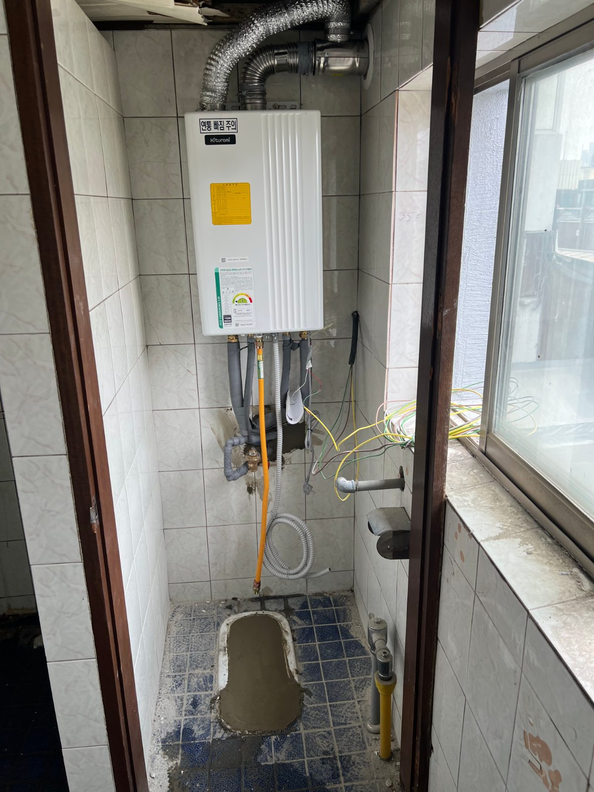
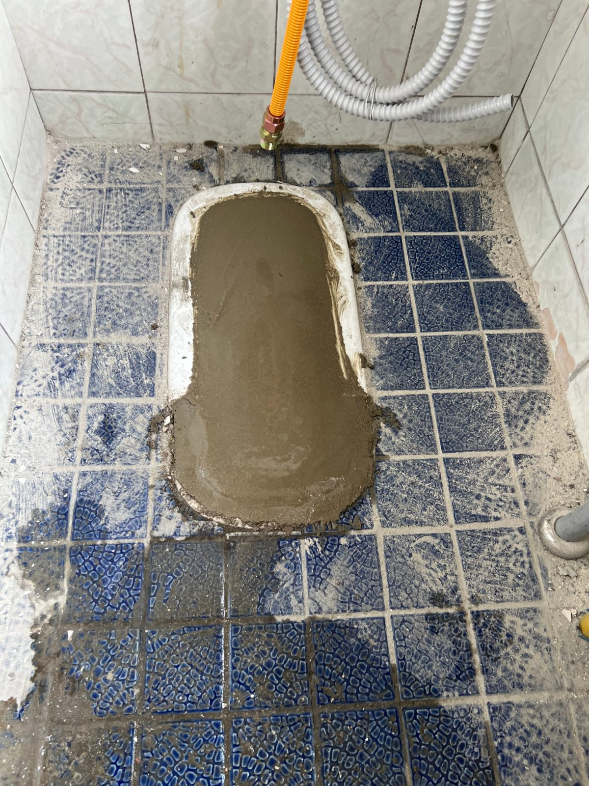
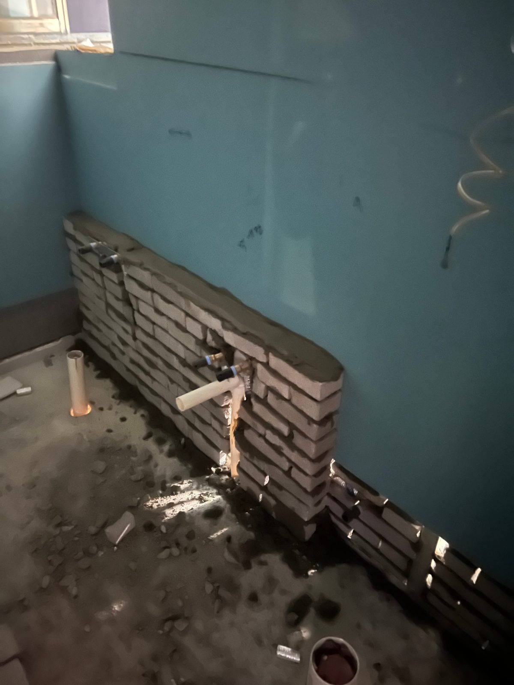

대전 카페 화장실 리모델링 — 철거 자리 정리부터 조적·배관 작업까지

현장 작업 한눈에 보기
- 현장
- 대전 카페 화장실
- 문제
- 설비·바탕 공정 리모델링
- 작업
- 철거·방수·조적·배관
난방·미장·보일러 기록 - 결과
- 사진은 바닥 메움·벽 하단 조적
완성 화장실 사진 없음
대전 카페 건물 화장실에서 철거, 방수, 조적, 난방·미장과 보일러 설치를 진행했습니다. 실제 사진이 남은 기구 철거 자리와 벽 하단 조적을 중심으로 여러 공정의 연결을 풀어봅니다.
여러 공정이 이어진 카페 화장실입니다
안녕하세요. 만물인테리어입니다. 대전의 한 카페 건물에서 화장실 리모델링을 진행했습니다.
기존 기구 철거부터 도막방수, 환풍기·벽돌 작업, 난방·미장, 보일러 설치까지 이어진 현장입니다. 그중 사진으로 남은 작업 위치를 나눠 보여 드립니다.
기구를 걷어 낸 자리에 바닥을 채웠습니다
첫 사진은 기존 위생기구가 있던 바닥 자리를 모르타르로 채운 모습입니다. 남아 있는 타일과 새로 채운 면의 경계가 뚜렷하게 보입니다.
욕실 전체 방수 사진이 아니라 기구 철거 뒤 바닥을 정리하는 세부 공정으로 보시면 됩니다.

벽 하단에는 조적과 배관 작업이 이어졌습니다
다음 사진에서는 벽 하단에 쌓은 벽돌과 그 사이로 나오는 배관을 볼 수 있습니다. 조적 상단과 배관 주변을 마감하기 전의 모습입니다.
이 장면은 환풍기 배기 경로가 아니라, 벽 하단 조적과 급·배수 배관 자리를 보여 줍니다.

방수와 난방·미장도 함께 진행했습니다
현장 공정에는 도막방수 1~3차와 난방배관 고정·미장, 가스보일러 설치가 포함되어 있습니다. 바닥과 벽에서 시작한 작업이 설비 연결까지 이어진 현장이었습니다.
사진으로 소개한 부분은 기구 철거 자리 정리와 벽 하단 조적입니다. 나머지 공정은 작업 내용으로 함께 정리했습니다.
상담할 때 필요한 범위를 먼저 정리합니다
상가 화장실은 기구만 바꾸는 경우와 방수·배관까지 손보는 경우의 작업 범위가 다릅니다. 사용 중 불편한 점과 바꾸고 싶은 위치를 먼저 알려 주세요.
기존 시설과 필요한 공정을 확인한 뒤 순서를 나눠 안내하겠습니다.
사진으로 소개한 공정과 전체 기록의 구분
공개 사진은 기구 철거 자리를 메운 바닥과 벽 하단 조적·급배수 배관 자리입니다. 방수·난방·미장·보일러는 공정 기록으로 소개하며 사진 두 장을 전체 공사의 전후로 사용하지 않습니다.
완성된 화장실이나 시험 결과의 추가 사진은 이번 자료에 없습니다. 상담에서는 공정별 포함 범위와 필요한 사용 재개 시점을 먼저 정리해 주세요.